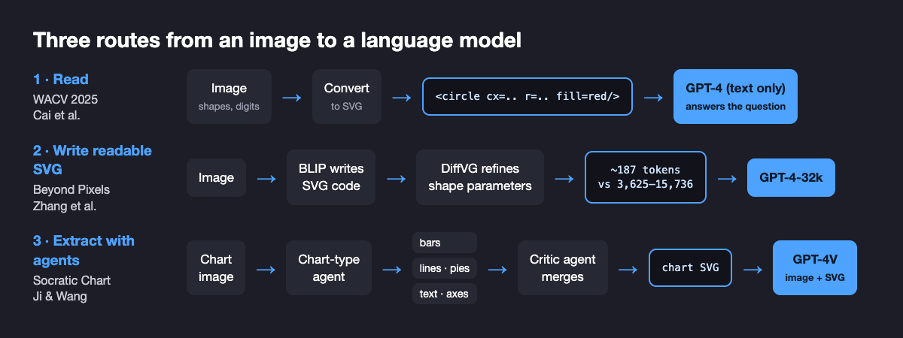

Can We Turn Vision Into a Language Modeling Problem?
Write an image as code, and a language model can reason about it. For simple images and charts, that already works, and how the code is written turns out to matter as much as the model reading it.
By Yuyang Ji, Tong Zhang, Mu Cai, Haohan Wang, and others · · About our WACV 2025 paper and two arXiv papers
Can we turn vision into a language modeling problem? Language models reason over discrete units with explicit relations: words, phrases, sentences. Most vision models start from a grid of pixels and have to recover every object and relation themselves. Three papers from our group test a simple alternative: write the image as Scalable Vector Graphics (SVG) code, a text list of shapes with positions, sizes and colors, and let a language model read it. In An Investigation on LLMs' Visual Understanding Ability Using SVG for Image-Text Bridging (Cai, Huang, Li, Ojha, Wang and Lee, WACV 2025), GPT-4, which never saw the pixels, answered Sort-of-CLEVR reasoning questions with 0.89 average accuracy, above a relation network trained for the task (0.75). The two follow-ups show what makes this work and where it stops working.
Key findings
- In the WACV 2025 paper by Cai et al. (University of Wisconsin-Madison and University of Illinois Urbana-Champaign), GPT-4 reading images as SVG code answered Sort-of-CLEVR visual reasoning questions with 0.89 average accuracy, versus 0.75 for a relation network trained on the task, and held 0.84 when new shapes were added, where the relation network fell to 0.61.
- In the same WACV 2025 paper, a Vicuna language model fine-tuned on MNIST digits written as SVG kept 92.9% accuracy on digits with recolored foregrounds and backgrounds (Colored-MNIST-B), while a ConvNeXt model fine-tuned on pixels fell from 99.5% to 32.6%.
- In Beyond Pixels (Zhang, Liu, Zhang, Cheng and Wang, arXiv 2023), GPT-4-32k answered questions about simple shape scenes with 87.75% accuracy from compact SVGs written by the S²VG² model, the same as from the ground-truth SVG (87.73%), but only about 50% from SVGs made by the LIVE and DiffVG vectorizers.
- In Socratic Chart (Ji and Wang, University of Illinois Urbana-Champaign, arXiv 2025), turning ChartQA charts into SVG with a team of extraction agents reached 57.6% relaxed accuracy once the charts' text labels were removed, versus 40.8% for GPT-4V and 37.2% for Gemini 2.0 on the same charts.
Why would vision need to become a language problem?
Large language models are good at in-context learning, multi-step reasoning and following open-ended instructions. Vision models have improved quickly, but they still struggle with questions that hinge on exact structure: which object is left of which, how tall a bar is, whether two shapes overlap. A natural guess is that part of the gap comes from the input. Text arrives already divided into units a model can reason over. An image arrives as millions of numbers, and the units have to be found first.
If that guess is right, one way to bring language-model reasoning to vision is to change the input: give the model an image that is already written as discrete parts with attributes. SVG is a convenient test case. It is plain XML text, it describes a picture as a list of shapes, and language models have seen a lot of it on the web. The question is not whether SVG is the final answer for vision, but whether a structured text version of an image lets a language model do things that pixel models find hard.
Key terms
- Scalable Vector Graphics (SVG)
- An XML text format that describes an image as shapes such as circles, rectangles and paths, each with coordinates, size and color, instead of as a grid of pixels.
- Raster image
- The usual pixel-grid image format (for example PNG or JPEG) that most vision models take as input.
- Vectorization
- Converting a raster image into vector graphics such as SVG.
- Sort-of-CLEVR
- A visual reasoning dataset of six colored shapes per image, with questions about one object (unary), pairs (binary) and triples (ternary) of objects.
- Distribution shift
- A change between training and test data, such as new colors or shapes, that often breaks models relying on surface cues.
- Relaxed accuracy (ChartQA)
- The standard ChartQA metric, which counts a numeric answer as correct if it is within 5% of the reference value.
How do you turn an image into something a language model can read?
The three papers take three routes to the same idea. The WACV 2025 paper asks the basic question: convert an image to SVG, paste the code into a prompt, and see what a text-only model can do with it. Beyond Pixels asks how the image should be written, since a vectorizer can describe the same picture with a few clean shapes or with dozens of overlapping paths. Socratic Chart moves to real data, charts, and uses a team of agents to write each chart as SVG before a multimodal model answers questions about it.

Can a text-only LLM understand an image written as SVG?
For simple images, often yes. In the WACV 2025 paper (first titled Leveraging Large Language Models for Scalable Vector Graphics-Driven Image Understanding on arXiv), led by Mu Cai and Zeyi Huang in Yong Jae Lee's group with Haohan Wang, Sort-of-CLEVR images were converted to SVG and given to GPT-4 as text, with the question appended. The comparison models, a CNN with an MLP head and a relation network, were trained on the dataset's pixel images. GPT-4 was not trained on the task at all.
| Sort-of-CLEVR accuracy | GPT-4, brief answer (SVG) | GPT-4, chain of thought (SVG) | CNN+MLP, trained (pixels) | Relation network, trained (pixels) |
|---|---|---|---|---|
| Unary questions | 0.50 | 0.90 | 0.65 | 0.89 |
| Binary questions | 0.90 | 0.95 | 0.75 | 0.80 |
| Ternary questions | 0.10 | 0.88 | 0.55 | 0.55 |
| Average, test set like training | 0.50 | 0.89 | 0.65 | 0.75 |
| Average, new shapes added | – | 0.84 | 0.49 | 0.61 |
| Average, new colors added | – | 0.87 | 0.53 | 0.67 |
Two details matter. First, asking GPT-4 to reason step by step was essential: with brief answers its ternary accuracy was 0.10. Second, the gap widened under distribution shift. Adding ellipses and triangles, or three new colors, cost the trained pixel models 8 to 16 points on average, while GPT-4 reading SVG lost 2 to 5. The paper evaluated GPT-4 on 120 questions because of API cost, so these are small-sample numbers.
The same pattern appeared in classification. The authors fine-tuned the Vicuna language model on MNIST digits converted to SVG, and compared it with ConvNeXt and Vicuna fine-tuned on pixel images, then tested all three on recolored digits.
| Test set | ConvNeXt (pixels) | Vicuna (pixels) | Vicuna (SVG) |
|---|---|---|---|
| MNIST | 99.5% | 99.4% | 99.1% |
| Colored-MNIST-A (red or green digits) | 79.5% | 42.9% | 95.7% |
| Colored-MNIST-B (20 foreground/background color pairs) | 32.6% | 24.8% | 92.9% |
The authors' explanation is that SVG writes shape and color as separate attributes, so a model can learn to rely on the shape. The paper also built an SVG question-answering set of 2,318 human-checked questions about color, category and usage. There GPT-4 averaged 48.8%, Mixtral-8x7B 38.7% and GPT-3.5 32.0%, against 25% chance: real but partial understanding. Not every result is strong. GPT-4 with no training classified SVG digits with only 20% accuracy zero-shot and 24% with one example.
What makes an SVG readable for a language model?
The WACV results used clean SVGs for clean images. Real vectorizers rarely produce code like that. Optimization-based methods such as DiffVG and LIVE fit a fixed budget of curved paths to the pixels, and the result can look right while the code is a pile of overlapping, partly hidden paths. In Beyond Pixels: Exploring Human-Readable SVG Generation for Simple Images with Vision Language Models, Tong Zhang, Haoyang Liu, Peiyan Zhang, Yuxuan Cheng and Haohan Wang built S²VG², which fine-tunes the BLIP vision-language model to write SVG code token by token, then refines the shape parameters with the DiffVG differentiable renderer so the rendering matches the input. It was trained on 50,000 image-SVG pairs of colored shapes on a 3×3 grid (SVG-SHAPE) and 500,000 pairs of transformed shapes (SVG-Transform).
The test of readability was direct: give each method's SVG to GPT-4-32k and ask questions about the picture.
| SVG source | VQA accuracy, all | Shape present? | Relative position | Mean length (tokens) |
|---|---|---|---|---|
| Ground-truth SVG | 87.73% | 99.25% | 76.20% | – |
| S²VG² | 87.75% | 99.05% | 76.45% | 187 |
| LIVE | 50.08% | 50.10% | 50.05% | 3,625 |
| DiffVG | 50.00% | 50.00% | 50.00% | 15,736 |
On yes/no questions, 50% is chance. The pixel-accurate but tangled SVGs from LIVE and DiffVG gave GPT-4 nothing usable, while S²VG²'s SVGs, 19 to 84 times shorter, were as useful as the ground truth. S²VG² also scored best on the image-similarity metrics (LPIPS 0.004, SSIM 0.995), and in a small user study 85.8% of responses picked its SVGs as the easiest to understand.
The lesson we draw is that an image has many valid SVG descriptions, and only some of them carry structure a reader can use. That suggests treating readability as a target in its own right rather than a side effect: spell out what readable SVG code looks like (few elements, each one corresponding to an object, no hidden or redundant shapes, a sensible order), measure those properties, and turn them into training objectives that push a generator toward simpler, better-organized code. In language terms, the tokenizer and the grammar of the image matter, not just the model reading it.
Do multimodal models really read charts, or just the numbers printed on them?
Charts are a natural real-world test because the answer often depends on an exact bar height or line position. In Socratic Chart: Cooperating Multiple Agents for Robust SVG Chart Understanding, Yuyang Ji and Haohan Wang first checked whether strong multimodal models read ChartQA charts visually. They removed the printed value labels (a set they call ChartQA-RL) and, separately, stretched charts horizontally or vertically (ChartQA-HV). Without labels, GPT-4V fell to 40.8% relaxed accuracy, a 37.6% relative drop, and Gemini 2.0 to 37.2%, a 50.0% drop: much of the reading was reading numbers.
Socratic Chart rebuilds the structure explicitly. A classifier agent identifies the chart type; specialized agent-generators extract bars, lines, pie segments, text and axes, each trying several tools; an agent-critic reconciles their versions; and the merged SVG goes to GPT-4V together with the chart image.

| Model | ChartQA (with labels) | ChartQA-RL (labels removed) | ChartQA-HV (stretched) |
|---|---|---|---|
| GPT-4V | – | 40.8% (−37.6%) | 58.5% (−19.9%) |
| GPT-4o | – | 50.0% (−35.7%) | 71.5% (−14.2%) |
| Gemini 2.0 | – | 37.2% (−50.0%) | 52.6% (−34.6%) |
| SIMPLOT (chart-to-table) | 83.24% | 46.7% (−36.5%) | 62.8% (−20.4%) |
| Socratic Chart, multi-agent | 81.50% | 57.6% (−23.9%) | 68.1% (−13.4%) |
Percentages in parentheses are the relative drops reported in the paper against each model's standard ChartQA score. Socratic Chart was second overall on standard ChartQA, behind SIMPLOT, but first on the human-written questions (80.40% versus 78.07%). On stretched charts GPT-4o scored higher in absolute terms; Socratic Chart's advantage there is the smaller drop. An ablation supports the structural reading: removing the y-axis elements from the SVG cut accuracy on stretched charts from 68.1% to 60.9%, and removing both axes to 59.2%. Removing the critic cost 1.2 points and replacing the specialized agents with one general extractor cost 3.3 points. On the harder CharXiv benchmark the system scored 30.1%, against 26.9% for GPT-4V.
Where does the SVG approach break down?
Natural photographs. A dog's fur or a cloudy sky does not decompose into a few circles and paths, so its SVG either throws away detail or becomes too long to read. The WACV 2025 paper measured this directly: on the 10-class Imagenette subset of ImageNet, Vicuna-7B reading SVG reached 68.14% top-1 accuracy, against 90.62% for a ResNet-50 trained on the original images. Beyond Pixels lists the same limits for image generation: a fixed token budget and difficulty with complex textures.
So our current view, also argued in Haohan Wang's essay Vision should be structural, is that the structure matters more than the format. Vision may well become partly a language modeling problem, but over a representation of objects and relations, which may sit above raw SVG and may be combined with pixels, as Socratic Chart already does by giving the model both. For charts, diagrams, icons and simple graphics, explicit structure helped in every experiment here. For natural images, the question is open.
How does this compare with other work on SVG and vision?
Several groups have reached related conclusions independently.
- Vision language models are blind (Rahmanzadehgervi, Bolton, Taesiri and Nguyen, 2024) gives the problem statement from the pixel side. On seven very simple tasks, such as whether two circles overlap or how often two lines cross, four leading VLMs averaged 58.07%, with Claude 3.5 Sonnet best at 77.84%. Their linear probes suggest the vision encoders hold the information and the language side fails to decode it, which is the same gap that explicit structure tries to close.
- Visually Descriptive Language Model for Vector Graphics Reasoning (VDLM; Zhenhailong Wang, Joy Hsu, Xingyao Wang, Kuan-Hao Huang, Manling Li, Jiajun Wu and Heng Ji, 2024) also encodes scenes as SVG, and observes that raw SVG is hard for models to interpret zero-shot. It adds an intermediate text description of primitives and their measurements. This agrees with the Beyond Pixels result that the form of the text matters, and suggests the right level may sit above raw SVG.
- StarVector: Generating Scalable Vector Graphics Code from Images and Text (Rodriguez et al., CVPR 2025) treats vectorization as code generation with a multimodal LLM trained on SVG-Stack, 2 million samples, and argues that pixel metrics such as MSE miss what makes an SVG good, a point close to our readability results.
- Rendering-Aware Reinforcement Learning for Vector Graphics Generation (RLRF; Rodriguez et al., 2025) renders the generated SVG and uses the match to the input image as a reward, a scalable alternative to the differentiable-rendering refinement step in S²VG².
- InternSVG: Towards Unified SVG Tasks with Multimodal Large Language Models (Haomin Wang et al., 2025) trains one model for SVG understanding, editing and generation, from icons to scientific diagrams and animations.
The direction of travel is clear in this list: most recent SVG work trains models to write SVG, while most widely used vision-language models still read images through pixel encoders. The papers in this post ask the reverse question, whether reading a structured text version of an image helps reasoning, and for simple images and charts the answer so far is yes.
What this does not show
- Simple images only. The strongest results use synthetic shapes, digits and charts, which are close to vector graphics already. On natural photographs, SVG lost to a pixel model by 22 points (68.14% versus 90.62% on Imagenette).
- Small evaluations. GPT-4 on Sort-of-CLEVR was evaluated on 120 questions, and the Beyond Pixels user study was small. Treat the exact numbers as indicative.
- Conversion is part of the system. In the WACV experiments, the SVGs came from clean sources or a curve-tracing converter. Beyond Pixels shows that a poor converter erases the benefit, so results depend on how the SVG is produced.
- Charts were not solved. Socratic Chart reached 57.6% on unlabeled charts, well below its 81.50% on labeled ones, it runs several agents per chart, which adds latency, and GPT-4o scored higher in absolute terms on stretched charts.
- Older models. These experiments used GPT-4, GPT-4V, Vicuna and BLIP-era models. Newer multimodal models may close part of the gap on their own, which these papers do not test.
- Two of the three papers are preprints. Beyond Pixels and Socratic Chart are on arXiv and have not been peer reviewed; the WACV 2025 paper has.
Frequently asked questions
Can a text-only LLM understand an image?
Yes, for simple images, if the image is first written as text such as SVG code. In the WACV 2025 paper by Cai et al., GPT-4 reading SVG reached 0.89 average accuracy on Sort-of-CLEVR visual reasoning questions, above a relation network trained on the task (0.75). It has not been shown for natural photographs, where SVG loses detail.
Why give an LLM SVG code instead of pixels?
SVG lists an image as objects with explicit attributes such as shape, position, size and color, which is closer to how language models reason over words. In the same WACV 2025 paper, a Vicuna model fine-tuned on SVG digits kept 92.9% accuracy on recolored digits, while a ConvNeXt model trained on pixels fell to 32.6%.
Does it matter how an image is converted to SVG?
Yes. In Beyond Pixels (Zhang et al., 2023), GPT-4-32k answered yes/no questions about shape scenes with 87.75% accuracy from compact S2VG2 SVGs, matching the ground-truth SVG, but only about 50%, the level of chance, from SVGs produced by the LIVE and DiffVG vectorizers, which were 19 to 84 times longer.
Do multimodal models really read charts, or the numbers printed on them?
Often the numbers. In Socratic Chart (Ji and Wang, 2025), removing the text labels from ChartQA charts cut GPT-4V to 40.8% relaxed accuracy, a 37.6% relative drop. Converting each chart to SVG with a team of extraction agents reached 57.6% on the same unlabeled charts.
Citation
@inproceedings{cai2025svgllm,
title = {An Investigation on LLMs' Visual Understanding Ability Using SVG for Image-Text Bridging},
author = {Cai, Mu and Huang, Zeyi and Li, Yuheng and Ojha, Utkarsh and Wang, Haohan and Lee, Yong Jae},
booktitle = {IEEE/CVF Winter Conference on Applications of Computer Vision (WACV)},
year = {2025}
}
@article{zhang2023beyondpixels,
title = {Beyond Pixels: Exploring Human-Readable SVG Generation for Simple Images with Vision Language Models},
author = {Zhang, Tong and Liu, Haoyang and Zhang, Peiyan and Cheng, Yuxuan and Wang, Haohan},
journal = {arXiv preprint arXiv:2311.15543},
year = {2023}
}
@article{ji2025socraticchart,
title = {Socratic Chart: Cooperating Multiple Agents for Robust SVG Chart Understanding},
author = {Ji, Yuyang and Wang, Haohan},
journal = {arXiv preprint arXiv:2504.09764},
year = {2025}
}Related from our lab
- Vision should be structural: why we turned images into SVG code, an essay by Haohan Wang
- Vision transformer robustness: the input changes a ViT cannot see
- Agent primitives: reusable building blocks for LLM multi-agent systems
- DREAM Lab publications, including our WACV 2025 paper on LLM visual understanding through SVG
- DREAM Lab preprints on vision, language models and agents
Papers: Mu Cai, Zeyi Huang, Yuheng Li, Utkarsh Ojha, Haohan Wang, Yong Jae Lee. “An Investigation on LLMs' Visual Understanding Ability Using SVG for Image-Text Bridging.” WACV 2025. · Tong Zhang, Haoyang Liu, Peiyan Zhang, Yuxuan Cheng, Haohan Wang. “Beyond Pixels: Exploring Human-Readable SVG Generation for Simple Images with Vision Language Models.” arXiv 2023. · Yuyang Ji, Haohan Wang. “Socratic Chart: Cooperating Multiple Agents for Robust SVG Chart Understanding.” arXiv 2025. University of Illinois Urbana-Champaign.